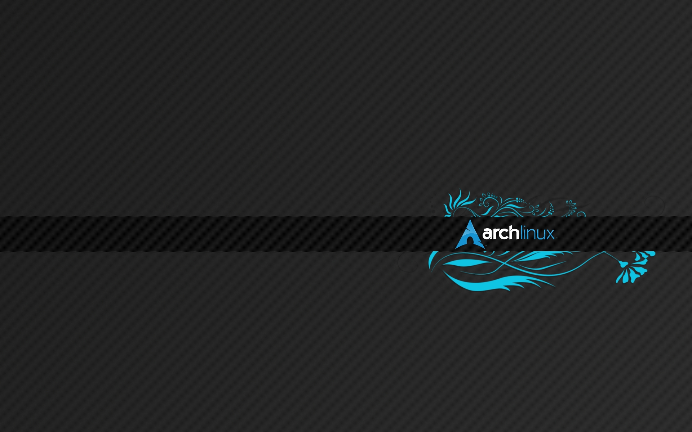

Arch Linux
Arch Linux es una distribución de Linux para computadoras basadas en arquitecturas x86-64.
Arch Linux está compuesto principalmente de software libre y de código abierto, y apoya la participación de la comunidad.
El enfoque de diseño del equipo de desarrollo sigue el principio KISS ("manténgalo simple, estúpido") como guía general, y se centra en la elegancia,
la corrección del código, el minimalismo y la simplicidad, y espera que el usuario esté dispuesto a hacer un esfuerzo para comprenderlo.
El funcionamiento del sistema.
Un gestor de paquetes escrito específicamente para Arch Linux, pacman, se utiliza para instalar, eliminar y actualizar paquetes de software.
Arch Linux utiliza un modelo de lanzamiento continuo, de modo que una actualización regular del sistema es todo lo que se necesita para obtener el
último software de Arch;
Las imágenes de instalación publicadas por el equipo de Arch son simplemente instantáneas actualizadas de los componentes principales del sistema.
Seguridad del repositorio
Hasta que pacman versión 4.0.0 el administrador de paquetes de Arch Linux carecía de soporte para paquetes firmados.
Paquetes y metadatos no fueron verificados por autenticidad por pacman durante el proceso de descarga e instalación.
Sin la verificación de la autenticación de paquetes, los duplicados de repositorios malintencionados o manipulados pueden comprometer la integridad de un sistema.
Pacman 4 permitió la verificación de la base de datos del paquete y los paquetes, pero se deshabilitó de forma predeterminada. En noviembre de 2011, la firma de paquetes
se convirtió en obligatoria para las nuevas compilaciones de paquetes y, a partir del 21 de marzo de 2012, se firmaron todos los paquetes oficiales.
Diseño y principios
Arch se basa principalmente en paquetes binarios. Los paquetes apuntan a los microprocesadores x86-64 para ayudar al rendimiento en el hardware moderno.
También se proporciona un sistema similar a los puertos / ebuild para la compilación de fuente automatizada, conocido como el Sistema de compilación de arcos.
Arch Linux se centra en la simplicidad del diseño, lo que significa que el enfoque principal consiste en crear un entorno que sea sencillo y relativamente fácil
de entender para el usuario, en lugar de proporcionar herramientas pulidas de gestión de estilo de apuntar y hacer clic: el administrador de paquetes, por ejemplo,
No tiene una interfaz gráfica oficial. Esto se logra en gran medida fomentando el uso de archivos de configuración limpios y comentados de forma sucinta que están
dispuestos para un rápido acceso y edición.
Esto le ha ganado una reputación como una distribución para "usuarios de Linux intermedios y avanzados que no tienen
miedo de la línea de comandos".
|  Aaron Griffin |
Confiar en herramientas complejas para administrar y construir su sistema perjudicará a los usuarios finales. [...] |